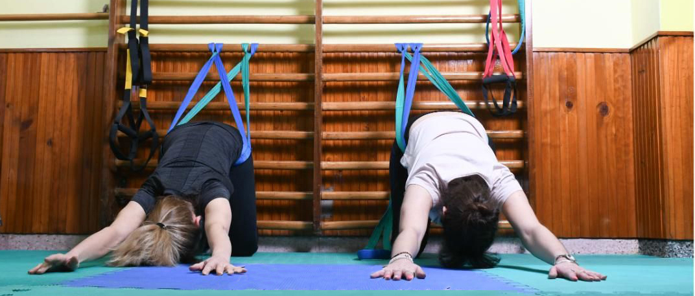
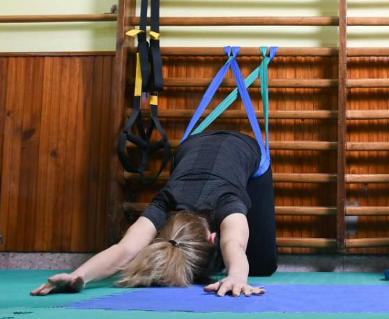
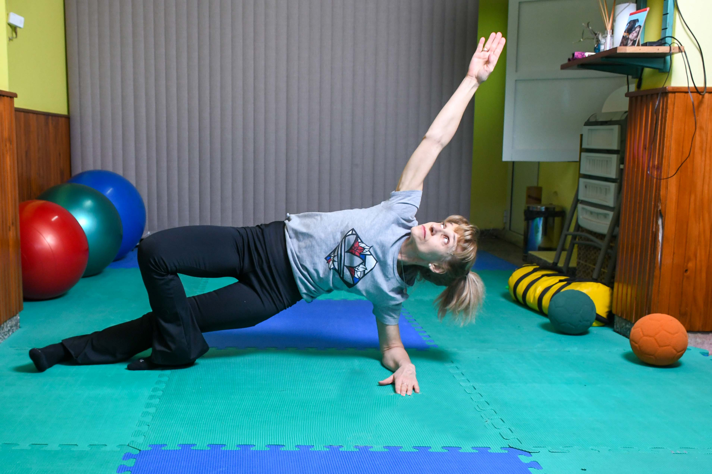
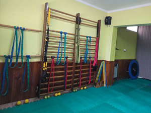
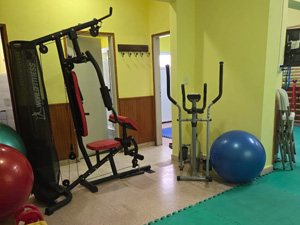
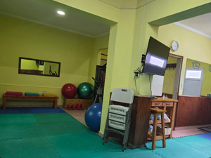
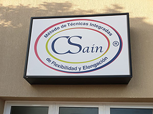

Método CSain® Flexibilidad y Elongación Integrativa
Entrená tu aptitud física y verás el cambio en tu actitud.
¿Qué es el Método CSain®?
El Método de Técnicas Integradas en Flexibilidad y Elongación CSain® (MTIFE) trabaja priorizando el desarrollo de la flexibilidad, la movilidad articular y la elongación muscular.
El objetivo central de este sistema es recuperar, reeducar y concientizar los movimientos corporales, fortalecer los sostenes estructurales y ampliar la coordinación dinámica del cuerpo. Así, se consigue un bienestar general mediante un cambio profundo de aptitud y actitud hacia una mejor calidad de vida.
Las técnicas que integra el enfoque MTIFE son ampliamente utilizadas tanto de forma terapéutica como en el complemento de entrenamientos deportivos de alto rendimiento.
Beneficios del Método CSain®
Logra recuperar una correcta mecánica del movement.
Evita perder el rango articular, acortamiento, tensión y espasmo muscular.
Permite un desarrollo de la coordinación y libertad de los movimientos corporales en forma global y disociada, consiguiendo un cuerpo liviano y ágil.
Aumenta la percepción sensorial, la resistencia corporal y mental.
Previene lesiones articulares, musculares y los desequilibrios o asimetrías estructurales.

Claudia Sain
Creadora & Formadora del Método
Trayectoria
Europa, EE.UU. e India
Ex Entrenadora
Nacional en el CeNARD
La Historia detrás del Sistema Integrativo
Hace un cuarto de siglo, Claudia Sain registró oficialmente el Método de Técnicas Integradas en Flexibilidad y Elongación CSain®. Su inspiración nació de un recorrido multifacético en el ecosistema físico y deportivo: como atleta, competidora de élite, formadora y dirigente en prestigiosos clubes, asociaciones y federaciones.
Su incansable búsqueda por perfeccionar el movimiento la llevó a estudiar e investigar por Europa (Italia, España, Francia), Estados Unidos (Nueva York, Pensilvania), Uruguay, Brasil, Chile e India. Esta sólida experiencia internacional y académica consolidó su designación como Entrenadora Nacional en el CeNARD y consejera dentro del Comité Olímpico Argentino.
"Tradicionalmente, los sistemas se centraban de forma exclusiva en la fuerza y la resistencia, relegando la flexibilidad a un plano complementario. El Método CSain® invierte el eje: la flexibilidad y la elongación son el núcleo motor, integrando la fuerza de manera coordinada para alcanzar una destreza técnica saludable y sin agresiones físicas."
Hoy en día, el método no es un esquema estático; se encuentra en constante actualización, ayornándose de forma permanente a las últimas investigaciones neuro-científicas y biomecánicas globales, uniendo la evolución de la Aptitud Física con el desarrollo de la Actitud Mental.
¿Cómo querés empezar?
Quiero Formarme
Accedé a nuestra Certificación Profesional. Un trayecto de 4 etapas diseñado para profundizar en la mecánica, planificación y reeducación del movimiento consciente.
Quiero Tomar Clases
Sumate a nuestras clases regulares de flexibilidad, elongación y fuerza. Disponibles en modalidad presencial en Bahía Blanca u online desde cualquier rincón del país vía Microsoft Teams.
Instalaciones y Elementos de Trabajo
Conocé el equipamiento específico que vas a utilizar en nuestras sesiones presenciales y formaciones.

Espaldares, cinturones

Aparatos

Pelotas, Espacio
